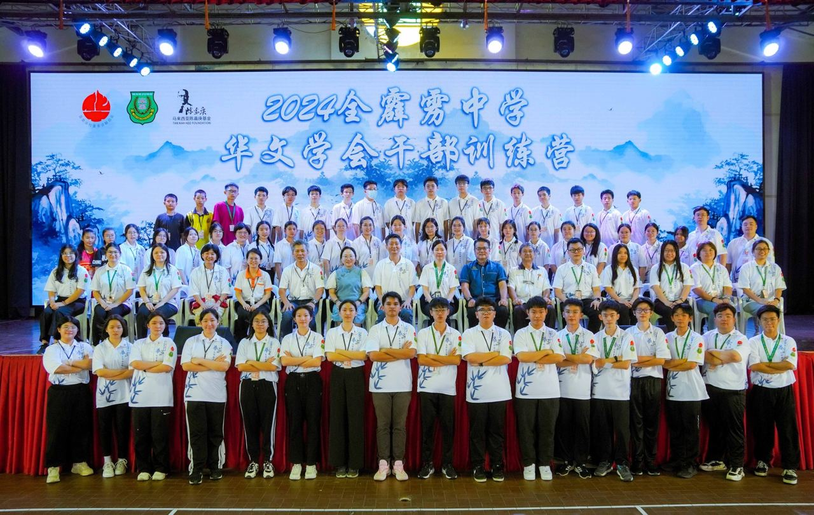
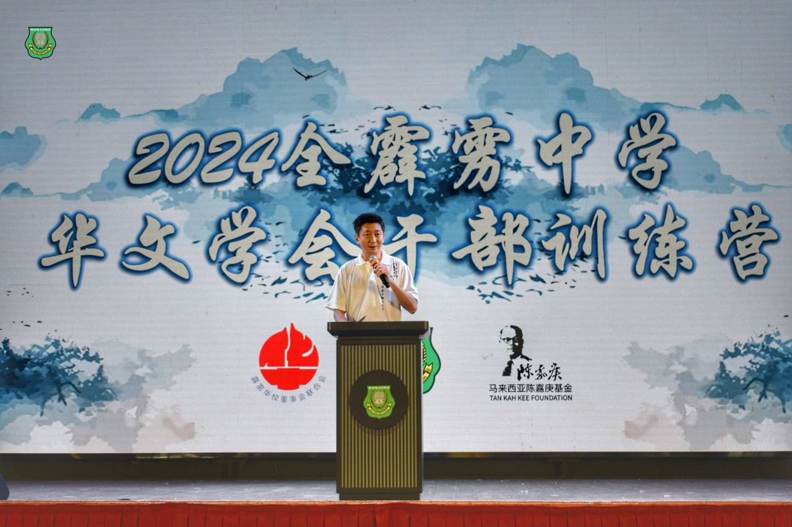
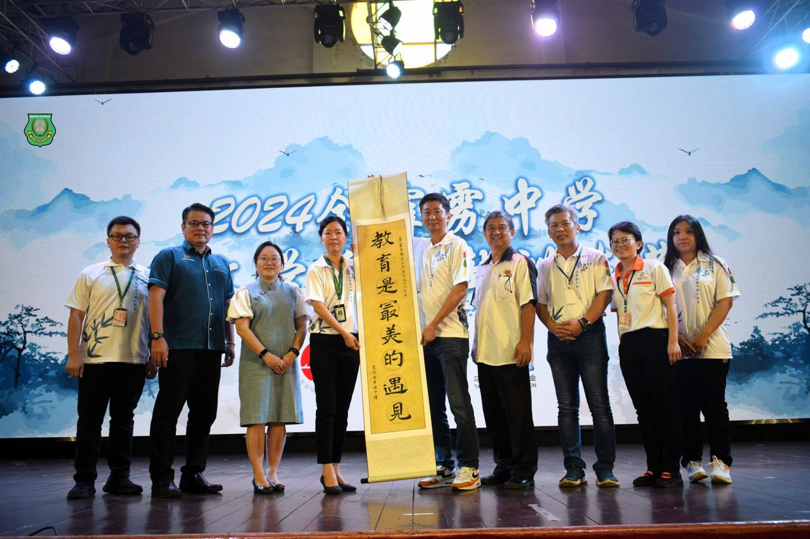
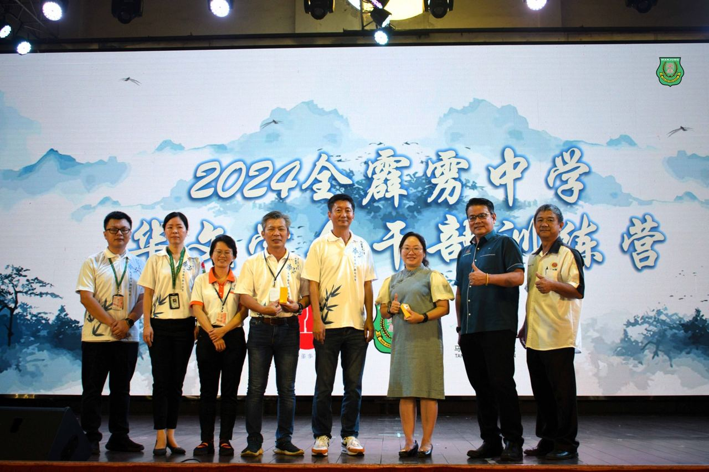
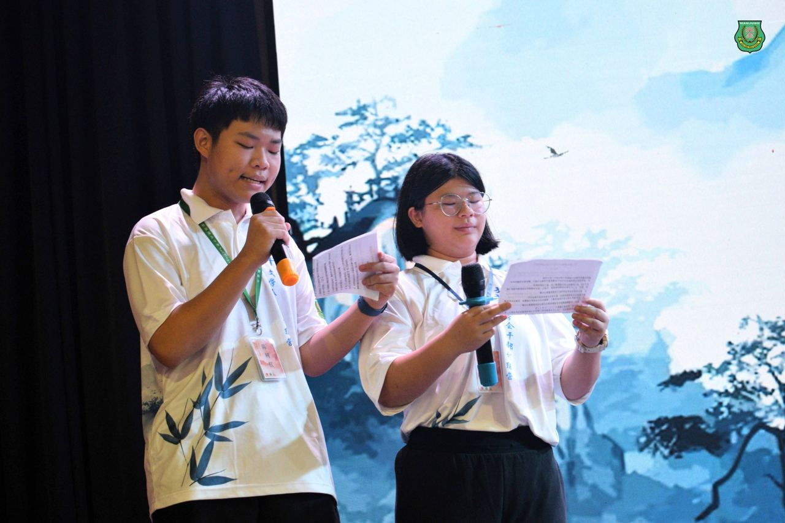
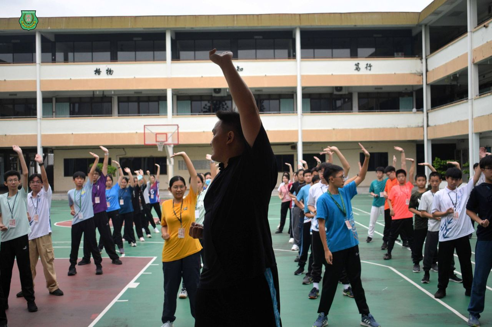
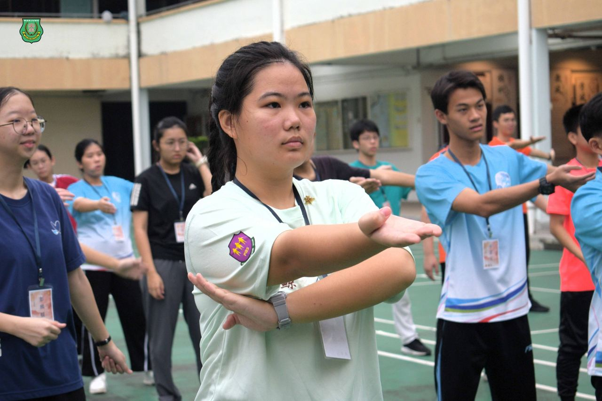
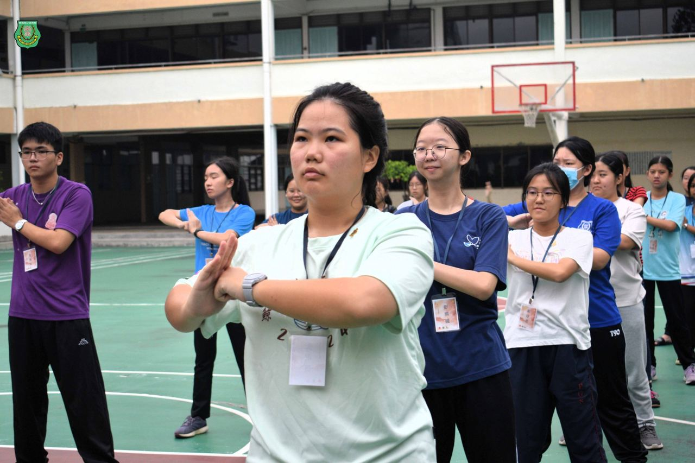

全霹雳中学华文学会干部训练营
全霹雳中学华文学会干部训练营
12校60位营员齐聚学习与传承中华文化
为期三天两夜的首届全霹雳中学华文学会干部训练营日前在南华独中圆满落幕。本次活动由霹雳华校董联会主催，南华独中主办，陈嘉庚基金会赞助，旨在培养新时代中华文化素养领袖人才、增强中华文化认同感与自豪感并并加深中华文化素养，共吸引了来自12间中学华文学会干部参加。
本次训练活动内容丰富多元，既有中华传统文化课程，也有现代化视角的专题讲座。其中，课程包括书法、漂漆扇制作、竹编扇艺术、中国结编织、针灸与推拿等，展现中华文化的博大精深；讲座则聚焦于华教历史、人工智能（AI）的运用与发展、领袖素养提升等议题，为干部们提供了广阔的学习视野与实用的知识。
霹雳董联会主席颜登逸先生在致辞中表示，希望通过此次训练营让青年干部感受到华教大家庭的温暖，进一步认识马来西亚华教运动的重要性以及中华文化的深厚底蕴。他强调，各校华文学会干部之间应建立紧密联系，共同组织与合作，携手在华教运动的道路上砥砺前行。
霹雳董联会总务黄志伟先生在致辞中指出，这次活动汇聚了全霹雳各校华文学会的骨干，是一个难得的机会。通过培训与交流，不仅能够让干部们增长才干，也有助于培养一批能够推动华社未来发展的优秀领袖。
南华独中校长陈丽冰博士在致辞中表示，这是霹雳州首次举办全州性的华文学会干部训练营，其宗旨在于传承中华文化与教育精神。她特别感谢霹雳董联会的精心策划、陈嘉庚基金会的大力支持，以及南华独中师生团队的无私付出，正是这些努力让这次训练营取得了圆满成功。







